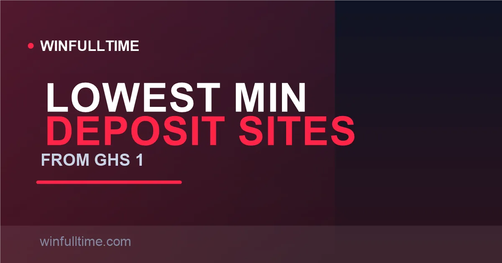

Betting Sites with the Lowest Minimum Deposit in Ghana 2026: From GHS 1

In Ghana you can open an account with GHS 1 via MTN MoMo, and on betPawa you can then stake as little as GHS 0.01 on a single slip. Few markets in Africa make starting this cheap. These are the licensed sites that let Ghanaian bettors begin smallest — and the deposit reality you actually need to understand.

Lowest-Deposit Sites at a Glance
Almost every GCG-licensed bookmaker in Ghana now accepts deposits from GHS 1. There is very little margin between the big names on the funding floor — the real differences show up in minimum stakes, minimum withdrawals and payout ceilings. Here is the short version before we break it down site by site.
| Site | Min Deposit | Min Stake | Min Withdrawal | Withdrawal Speed |
|---|---|---|---|---|
| betPawa | GHS 1 | GHS 0.01 | GHS 1 | Minutes |
| Betika | GHS 1 | ~GHS 0.50 | GHS 1 | Minutes |
| 1xBet | GHS 1 | ~GHS 1 | GHS 1 | 10–15 min |
| SportyBet | GHS 1 | ~GHS 1 | GHS 1 | Near-instant |
| Betway | GHS 1 | ~GHS 1 | GHS 5 | ~3 min |
| Betwinner | GHS 2 | ~GHS 1 | GHS 5 | ~4 min |
| 888Starz | GHS 10 | ~GHS 1 | GHS 10 | ~19 min |
Floors verified August 2026 across betrankgh test data and operator pages. Limits change — always confirm on the site before depositing.
Minimum Stake vs Minimum Deposit: Know the Difference
These two numbers are frequently confused, and it is the single most important thing to grasp when you bet small in Ghana. Minimum deposit is the smallest amount you can fund your account with — usually GHS 1. Minimum stake is the smallest amount you can put on a single bet slip — and that number varies far more between operators.
betPawa is the clearest example: you must deposit at least GHS 1, but you can then split that single cedi across slips that stake as little as GHS 0.01 each — giving you dozens of tiny tickets from one tiny deposit. Understanding this split means you never fund an account with more than you intend to play, and you never mistake a generous betting floor for a low deposit barrier.
1. betPawa Lowest Stakes in Ghana
betPawa is the reference point for micro-stake betting in Ghana. You can stake as little as GHS 0.01 per slip, which is the lowest in the market, alongside a GHS 1 minimum deposit and GHS 1 minimum withdrawal. No other GCG-licensed bookmaker we cover goes anywhere near that low.
The product is deliberately stripped down around that single idea: no welcome bonus, no live streaming and no bet builder, but an automatic Win Bonus of up to 500% on accumulators that needs no code and no rollover. Deposits and withdrawals run through MTN MoMo, Telecel Cash and AirtelTigo Money with zero platform fees, and payouts to your wallet can land in minutes — though the per-transaction ceiling is comparatively low, so large wins may need to be withdrawn in several transactions.
Pros
- Lowest minimum stake in Ghana
- GHS 1 deposit and withdrawal
- Fast, automated MoMo payouts
- Automatic accumulator win bonus
Cons
- No welcome bonus or live streaming
- Low per-transaction withdrawal ceiling
- Simple product, not for market depth
Verdict: The best place to start with the smallest possible stake and the lowest entry barrier in Ghana.
2. Betika Best for Basic Phones
Betika pairs a GHS 1 minimum deposit and GHS 1 minimum withdrawal with one of the strongest low-data experiences in the country. Its USSD shortcode *263# lets you register, deposit, bet and withdraw with zero data on any network, and the stripped-down Betika Lite site is built to load on slow 2G/3G connections.
Funds flow through MTN MoMo, Telecel Cash and AT Money, with deposits crediting near-instantly and withdrawals to your wallet typically reflecting within minutes up to the GHS 2,000 instant ceiling. One trap to note: Betika charges 10% if you withdraw deposited funds you haven't wagered — avoidable by placing any bet, even a small one, before withdrawing.
Pros
- GHS 1 floor on deposits and cashouts
- Zero-data USSD betting
- Works well on low-end phones
- Fast MoMo payouts
Cons
- 10% fee on unwagered withdrawals
- GHS 2,000 instant payout cap
- Online only — no retail shops
Verdict: The best GHS 1 entry if data is tight and you want betting that works anywhere, including without internet at all.
3. 1xBet Lowest Odds Margins
1xBet offers a GHS 1 minimum deposit via MTN MoMo, Telecel Cash and AT Money, crediting near-instantly with no deposit fees. It holds the lowest odds margins in Ghana (an EPL margin around 4.1%) and the deepest market depth of any licensed operator — more than 1,200 markets on a major match.
The trade-off is complexity: 1xBet's interface is dense and it consumes more data than lighter rivals. It also complements MoMo with 50+ cryptocurrency options for high-volume bettors, though crypto deposits are excluded from the welcome bonus and crypto funds must be withdrawn through crypto channels.
Pros
- Low GHS 1 funding floor
- Sharpest odds in Ghana
- Huge market selection
- Fast MoMo payouts
Cons
- Cluttered, complicated interface
- Heavy data consumption
- Strict closed-loop withdrawal rules
Verdict: The lowest-deposit option for experienced punters who want sharp odds and enormous market depth.
4. SportyBet Fastest Cashouts
SportyBet is Ghana's most downloaded betting app and pairs a GHS 1 minimum deposit and withdrawal with the fastest payout times we tested — often 30 seconds to just under two minutes. It is a clean, light product (around 18MB) that suits casual football-first bettors.
The 150% welcome bonus up to GHS 500 and the tiered accumulator boosts are available from that GHS 1 start, and deposits via MTN MoMo, Telecel and AirtelTigo credit instantly. Aviator and Instant Virtuals round out the offering behind the sportsbook.
Pros
- Very fast withdrawals
- Light, data-friendly app
- GHS 1 deposit and cashout
- Solid accumulator boosts
Cons
- APK install for Android (not on Play Store)
- Smaller market depth than 1xBet
- Limited live streaming
Verdict: The best GHS 1 option if fast withdrawals and a clean mobile app matter most.
5. Betway Data-Free App
Betway accepts a GHS 1 minimum deposit and is famous in Ghana for its data-free app — on MTN and Telecel SIMs it loads, takes bets, executes cashouts and processes withdrawals even with your data bundle switched off. That makes it the default for budget-conscious bettors managing tight data.
It holds slightly higher odds margins than 1xBet but pairs them with tight pricing (a 4.5–5.5% margin on top football) and superb crash-game performance, including Aviator. The welcome offer is a 50% first-deposit match up to GHS 200. Note that Betway's minimum withdrawal is generally higher than the deposit floor, around GHS 5.
Pros
- Genuinely data-free app
- Trusted, established brand
- Great crash-game experience
- GHS 1 deposit floor
Cons
- Higher minimum withdrawal (~GHS 5)
- Welcome bonus requires 10x playthrough
- Smaller market depth than rivals
Verdict: A dependable GHS 1 start that keeps working when your data runs out.
Who Needs More: GHS 2 to GHS 10
Not every operator matches the GHS 1 floor. Betwinner sets a GHS 2 minimum deposit, Melbet around GHS 5, and 888Starz sits at GHS 10 — alongside Betano and Paripesa at GHS 10 for their standard offers. If funding the absolute minimum is your priority, the GHS 1 group (betPawa, Betika, 1xBet, SportyBet, Betway, MSport) is where you stay.
The GHS 2–10 group still offers larger headline welcome bonuses — 1xBet's GHS 5,500 ceiling, Betwinner's GHS 2,500 and MSport's GHS 3,000 — so a slightly higher deposit often unlocks a bigger bonus package. It is a trade-off: the lowest floor, or the most value per initial deposit.
Deposit Methods & Withdrawal Floors
| Method | Typical Min Deposit | Where It Works |
|---|---|---|
| MTN MoMo | GHS 1 | Nearly every licensed operator |
| Telecel Cash | GHS 1 | Betika, betPawa, 1xBet, SportyBet, Betway |
| AirtelTigo Money | GHS 1 | Betika, betPawa, 1xBet, SportyBet |
| Crypto (BTC/USDT) | Varies | 1xBet, Betwinner |
MoMo wallet floors are set by your network under Bank of Ghana rules and can vary by account tier.
Tip: fund from the number you registered with
Withdrawals are paid back to the mobile-money number linked to your account. Mismatched numbers are the most common cause of payout delays — fund and withdraw from the same MoMo number from day one.
The Low-Deposit Reality Check
Small deposits have a genuine downside that the marketing never mentions: per-transaction withdrawal ceilings. betPawa's low per-transaction cap and Betika's GHS 2,000 instant limit mean a big win may be paid out in several batches, and above certain thresholds operators add KYC review. Plan for that if you hit a large accumulator.
There is also the question of cost discipline versus convenience. A GHS 1 deposit with GHS 0.01 stakes is a superb way to test a bookmaker, but micro-stakes make it easy to place far more bets than you realise. Treat the low floor as a way to manage bankroll risk, not as a licence to ignore how many slips you open in a week.
Tip: verify with your Ghana Card early
Every licensed operator in Ghana now requires Ghana Card (or passport) KYC before you can withdraw. Complete verification soon after registering — before you need it — so your first cashout is never delayed by an identity check.
Frequently Asked Questions
What is the lowest minimum deposit on a betting site in Ghana in 2026?
Most major GCG-licensed operators including Betika, 1xBet, Betway, SportyBet, MSport and betPawa accept deposits from GHS 1 via MTN MoMo, Telecel Cash or AirtelTigo Money. The standout is betPawa, which lets you stake as low as GHS 0.01 per slip on top of a GHS 1 minimum deposit.
What is the minimum stake vs minimum deposit — are they the same?
No. The minimum stake is the smallest amount you can put on a single bet slip, while the minimum deposit is the smallest amount you can fund your account with. betPawa is the clearest example: you must deposit at least GHS 1, but you can then spread that across slips staking as little as GHS 0.01 each.
Is there a tax on betting winnings in Ghana?
No. The Ghana Revenue Authority's 10% withholding tax on betting winnings was repealed under Act 1129 effective 2 April 2025. Your full payout lands in your Momo wallet with nothing deducted.
Which payment methods accept GHS 1 deposits in Ghana?
MTN Mobile Money (MoMo), Telecel Cash (formerly Vodafone Cash) and AirtelTigo Money all accept deposits from GHS 1 on most licensed operators. MTN MoMo handles the majority of Ghanaian mobile money transactions, so nearly every bookmaker on this list supports it as a default.
Is it safe to bet with such small deposits?
Yes, but only on licensed operators. Stick to sites with a Gaming Commission of Ghana (GCG) licence and complete your Ghana Card KYC verification so you can actually withdraw. Small deposits are a sensible way to test a bookmaker, but micro-stakes also make it easy to place far more bets than you realise — count your bets per week, not just your cedis.
Make Small Stakes Count
Turn a modest deposit into sharper tickets with data-driven predictions and head-to-head analysis built for Ghanaian fixtures and big European leagues.
Last updated: 31 August 2026 | By Tochukwu Mesigo |
Build Winning Accumulator Tickets
Generate optimized accumulator combinations from today's data-driven predictions. Set your target odds and get instant ticket suggestions.
Free Ticket Builder →